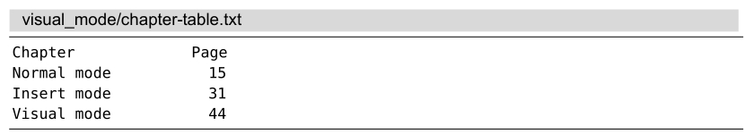

技巧24用面向列块的可视模式编辑表格数据
在任何编辑器中，我们都能够操作以行为单位的文本，但以列为单位进行文本操作就需要更为专业的工具了。Vim面向列块的可视模式就提供了这种能力，我们可以用它来对纯文本表格进行转换。
假设有如下一个纯文本表格：

我们想用管道符画一条竖线来隔开这两列文本，使之看起来更像一个表格。但是在此之前，要先减少两列之间的间隔，使它们不要分得这么开。用面向列块的可视模式可以完成这两处修改，具体做法请参见表4-3。
表4-3在列间增加分隔竖线
一开始，我们先使用<C-v>进入列块可视模式，然后向下移动几行光标，选中一列文本。接下来，按x键删除此列，并用 .命令重复删除相同范围的文本，多重复几次直到距右边差不多有两列的距离。
我们也可以不用.命令，而是把光标向右移动两三次，把列选区扩展为块选区，而后只需删除一次即可。不过，我更喜欢在删除时看到即时的视觉反馈，然后再多次重复此操作。
现在，我们已经把所需的两列文本排列到了合适的位置，接下来就可以在这两列文本间画一条竖线了。我们先用gv命令重选上次的高亮选区，然后输入r|，用管道符替换此选区内的字符。
到了这一步，我们或许也想画一条横线来分隔表头及其下的内容。我们先快速地复制顶行并粘贴一份副本（yyp），然后再用连字符替换该行内的所有字符（Vr-）。